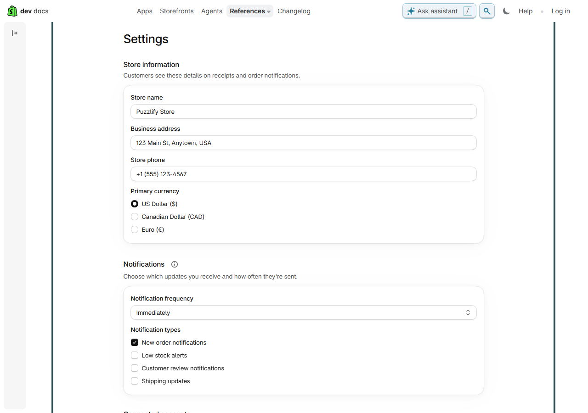
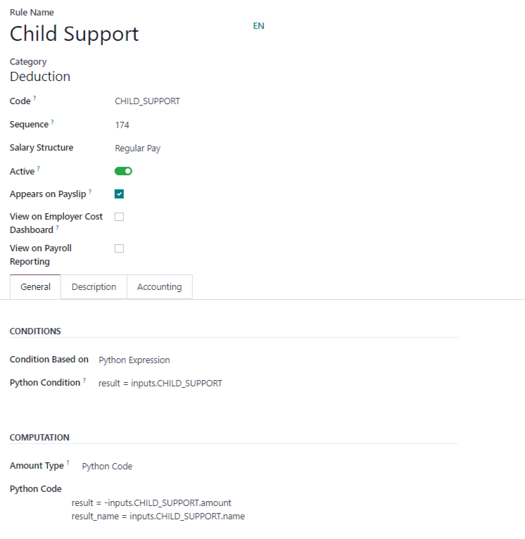

Tab Khoán của công đoạn — làm lại phần khai giá
Dữ liệu thật của công đoạn IN-12P "Bài in 1–2 màu Pantone" trên DB dev. Làm lại bốn khối Đơn giá, Giá theo tổ, Tuỳ chọn khi ghi, Việc phát sinh. Công thức khoán chuyển xuống CUỐI CÙNG và giữ nguyên như hiện tại (ở mockup chỉ vẽ khung để chỉ chỗ đứng).
- Đã đọc:
KhoanCongDoan.tsx(bốn khối + bảng giá theo tổ),ViecPhatSinh.tsxvà khung bảng dùng chungRowEditor.tsx, khung tab ởCatalogDrawer.tsx(drawer rộng tối đa 1100px khi có ô công thức), hộp ghi sản lượng của thợThsxExecPanels.tsx(nơi hiện "Tuỳ chọn lần này" với tên + gợi ý, và việc phát sinh với tên + đơn vị + giá của tổ), luật lưucong_doan_service._kiem_khoan / _kiem_tuy_chon / _kiem_gia_theo_to, cách lấy giáviec_khoan.gia_cua_to / gia_ps_cua_to. - Luật giữ nguyên, không đổi: đơn vị tính và đơn giá chung bắt buộc; việc phát sinh phải có tên không trùng, đơn giá, đơn vị trong danh mục; tuỳ chọn có tên, mã chữ thường không dấu, kiểu Có / không hoặc Số; giá theo tổ: bảng chính trống thì mọi tổ dùng giá chung, đã khai tổ nào thì tổ vắng là thiếu giá, mỗi cột việc phát sinh tính riêng.
- Không bớt ô nào. Cả ba phương án vẫn đủ: đơn vị, giá cố định chung, đơn giá chung, bảng giá theo tổ (cột giá cố định, đơn giá, mỗi việc phát sinh một cột), tuỳ chọn (tên, mã, kiểu, gợi ý), việc phát sinh (tên, đơn giá, đơn vị).



A. Mỗi khối: tiêu đề + một dòng giải thích ở ngoài, thẻ chỉ chứa ô
Bám đúng mẫu Settings của Shopify.
- Bỏ tiêu đề IN HOA màu đỏ và vạch kẻ trong thẻ; tiêu đề thường, chữ đen, nằm trên thẻ.
- Đoạn giải thích hai ba dòng rút về một dòng phụ đề dưới tiêu đề. Nút "＋ Thêm" lên cùng hàng tiêu đề, thay nút viền gạch to ở đáy thẻ.
- Tiêu đề cột viết thường. Ô giá rộng cố định 150px, ô số căn phải, đơn vị "đ" trong ô.
Chỉnh sửa
Bài in 1–2 màu Pantone
Thông tinKhoánVật tưCông thức tính giáNhật ký
Đơn giá
Giá chung cho mọi tổ, trừ tổ có giá riêng ở bảng dưới.
Đơn vị tính khoán *
tờ✕
Giá cố định chung
225000đ
Đơn giá chung *
30đ
Giá theo tổ
Ô trống dùng giá chung (số mờ). Đã điền cho một tổ thì tổ còn trống là thiếu giá.
| Tổ | Giá cố định | Đơn giá | Thay kẽm | Xuống bài do lỗi máy… | |
|---|---|---|---|---|---|
| Nhóm thợ in máy 2 màu | 225000đ |
30đ |
100000đ |
187500đ |
Tuỳ chọn khi ghi
Thợ tick hoặc gõ số ở mỗi lần ghi. Có / không vào công thức là 1 hoặc 0, bỏ trống là 0.
| Tên hiện cho thợ | Mã trong công thức | Kiểu | Gợi ý cho thợ | |
|---|---|---|---|---|
Chạy tiếp (bài ghép liên tục, chỉ tính thay kẽm) |
chay_tiep |
Có / không▾ |
🗑 |
Việc phát sinh
Thợ tick kèm số lượng ở lần ghi, không cộng vào sản lượng. Mỗi việc thành một cột ở bảng Giá theo tổ.
| Tên việc | Đơn giá | Đơn vị tính | |
|---|---|---|---|
Thay kẽm |
100000đ |
bản kẽm✕ |
🗑 |
Xuống bài do lỗi máy hoặc bộ phận khác |
0đ |
bài in✕ |
🗑 |
Công thức khoán
Giữ nguyên như hiện tại, chỉ chuyển xuống cuối.
(1 − Chạy tiếp) × Giá cố định + max(0, SL ghi × (1 + Tự trở) − (1 − Chạy tiếp) × 3000) × Đơn giá khoánKhi chưa có tuỳ chọn hay việc phát sinh nào: thẻ chỉ còn một dòng chữ xám "Chưa có tuỳ chọn" cao 40px, nút thêm vẫn ở hàng tiêu đề.
B. Phẳng như Odoo: một tấm nền, các nhóm ngăn bằng tiêu đề nhỏ
Bám màn quy tắc lương của Odoo.
- Bỏ hết thẻ lồng: cả tab là một tấm trắng, mỗi nhóm là tiêu đề nhỏ chữ xám có vạch mảnh dưới.
- Đoạn giải thích chuyển vào dấu "?" cạnh tiêu đề (rê chuột vào để đọc, thử ở "Giá theo tổ"). Màn thấp hẳn.
- Ô trong bảng không viền, chỉ hiện viền khi rê hoặc đang gõ, bảng đọc như danh sách. Đơn giá xếp nhãn trái ô phải trên một hàng.
Chỉnh sửa
Bài in 1–2 màu Pantone
Thông tinKhoánVật tưCông thức tính giáNhật ký
Đơn giá
?
Đơn vị tính *
tờ✕
Giá cố định chung225000đ
Đơn giá chung *30đ
Giá theo tổ
?| Tổ | Giá cố định | Đơn giá | Thay kẽm | Xuống bài do lỗi máy… |
|---|---|---|---|---|
| Nhóm thợ in máy 2 màu | 225000đ |
30đ |
100000đ |
187500đ |
Tuỳ chọn khi ghi
?| Tên hiện cho thợ | Mã | Kiểu | Gợi ý cho thợ | |
|---|---|---|---|---|
Chạy tiếp (bài ghép liên tục, chỉ tính thay kẽm) |
chay_tiep |
Có / không▾ |
— |
🗑 |
Việc phát sinh
?| Tên việc | Đơn giá | Đơn vị tính | |
|---|---|---|---|
Thay kẽm |
100000đ |
bản kẽm▾ |
🗑 |
Xuống bài do lỗi máy hoặc bộ phận khác |
0đ |
bài in▾ |
🗑 |
Công thức khoán
Giữ nguyên như hiện tại, chỉ chuyển xuống cuối.
(1 − Chạy tiếp) × Giá cố định + max(0, SL ghi × (1 + Tự trở) − (1 − Chạy tiếp) × 3000) × Đơn giá khoánĐánh đổi: giải thích nằm trong dấu "?", người mới phải rê chuột mới đọc được luật "tổ còn trống là thiếu giá".
C. Mỗi bảng là một lưới ô liền như Excel
Bám bảng giá bậc kiểu Stripe.
- Giữ mỗi khối một thẻ, tiêu đề thường chữ đen, giải thích một dòng xám ngay cạnh tiêu đề.
- Bảng không còn ô nhập rời có viền: cả bảng là một lưới, ô nào bấm vào là gõ (ô đang gõ có viền xanh). Số kế thừa giá chung là chữ xám.
- Hàng "＋ Thêm" là hàng cuối của lưới, không phải nút rời. Đơn giá cũng là lưới một hàng ba ô cho cùng nhịp.
Chỉnh sửa
Bài in 1–2 màu Pantone
Thông tinKhoánVật tưCông thức tính giáNhật ký
Đơn giá
Giá chung cho mọi tổ, trừ tổ có giá riêng.| Đơn vị tính khoán * | Giá cố định chung | Đơn giá chung * |
|---|---|---|
tờ▾ | 225000đ | 30đ |
Giá theo tổ
Ô xám là giá chung. Đã điền cho một tổ thì tổ còn trống là thiếu giá.| Tổ | Giá cố định | Đơn giá | Thay kẽm | Xuống bài do lỗi máy… |
|---|---|---|---|---|
Nhóm thợ in máy 2 màu |
225000đ |
30đ |
100000đ |
187500đ |
Tuỳ chọn khi ghi
Thợ tick hoặc gõ số mỗi lần ghi. Có / không là 1 hoặc 0, bỏ trống là 0.| Tên hiện cho thợ | Mã trong công thức | Kiểu | Gợi ý cho thợ | |
|---|---|---|---|---|
Chạy tiếp (bài ghép liên tục, chỉ tính thay kẽm) |
chay_tiep |
Có / không▾ |
✕ | |
＋ Thêm tuỳ chọn | ||||
Việc phát sinh
Không cộng vào sản lượng. Mỗi việc thành một cột ở Giá theo tổ.| Tên việc | Đơn giá | Đơn vị tính | |
|---|---|---|---|
Thay kẽm |
100000đ |
bản kẽm▾ |
✕ |
Xuống bài do lỗi máy hoặc bộ phận khác |
0đ |
bài in▾ |
✕ |
＋ Thêm việc phát sinh | |||
Công thức khoán
Giữ nguyên như hiện tại, chỉ chuyển xuống cuối.(1 − Chạy tiếp) × Giá cố định + max(0, SL ghi × (1 + Tự trở) − (1 − Chạy tiếp) × 3000) × Đơn giá khoánĐánh đổi: ô chọn đơn vị (tìm theo gõ) phải bày danh sách thả xuống từ trong ô lưới; phần code cần một lớp CSS lưới riêng cho bốn bảng, ô nhập vẫn là ô nhập thật chỉ bỏ viền.